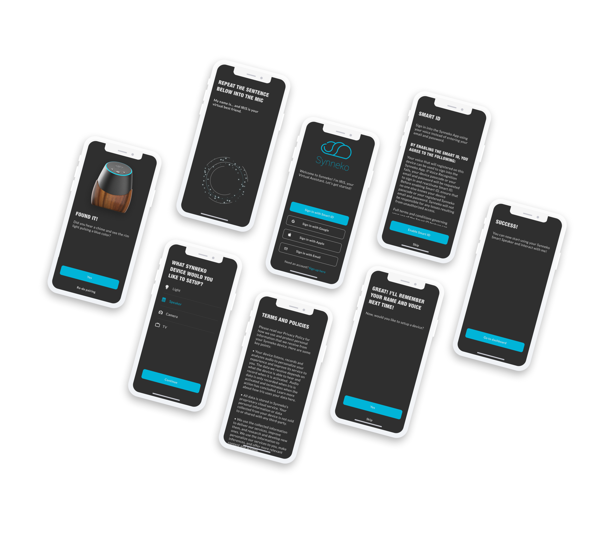
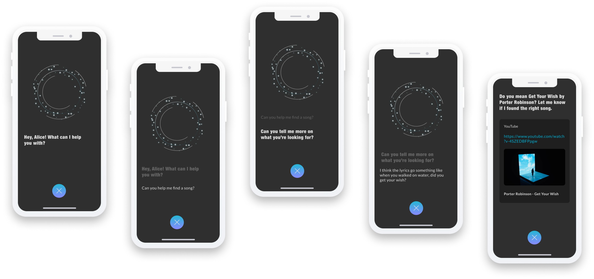

UX Case Study
SYNNEKO
End-to-end mobile IoT app
SOLUTIONS
Security

Synneko AI

NEXT STEPS
Overall, I learned that disconnections happen often as it disrupted the team's workflow and we had to reassess in the beginning.
However, we recovered quickly and I took the opportunity to learn about my team's strengths and weaknesses and offered to assist
various tasks to expedite the workflow.